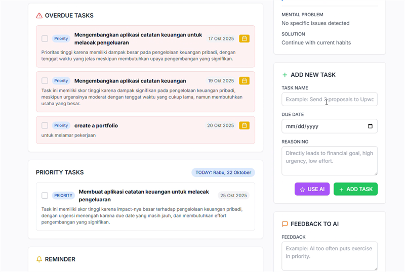

Building a Powerful Automation Workflow with n8n
A step-by-step guide to creating your first n8n workflow, integrating multiple apps, and automating repetitive tasks to boost your productivity.
Read ArticleOngoing experiments, lessons, and thoughts on automation, AI, and workflow design. Best practices for learning and implementation too!
A step-by-step guide to creating your first n8n workflow, integrating multiple apps, and automating repetitive tasks to boost your productivity.
Read Article
Exploring how AI and machine learning are revolutionizing the manufacturing industry, from predictive maintenance to quality control.
Read Article
A curated list of the best no-code platforms that help me build and test ideas quickly without writing a single line of code.
Read ArticleLearn how to transform raw data into compelling narratives that drive action and influence decisions. It's not just about charts; it's about the story.
Read ArticleAs AI becomes more powerful, the ethical considerations become more complex. A discussion on bias, fairness, and transparency in AI systems.
Read Article
Practical tips and tricks that you can implement today to streamline your personal and professional workflows for maximum efficiency.
Read Article